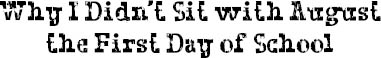

OKAY, I’M A total hypocrite. I know. That very first day of school I remember seeing August in the cafeteria. Everybody was looking at him. Talking about him. Back then, no one was used to his face or even knew that he was coming to Beecher, so it was a total shocker for a lot of people to see him there on the first day of school. Most kids were even afraid to get near him.
So when I saw him going into the cafeteria ahead of me, I knew he’d have no one to sit with, but I just couldn’t bring myself to sit with him. I had been hanging out with him all morning long because we had so many classes together, and I guess I was just kind of wanting a little normal time to chill with other kids. So when I saw him move to a table on the other side of the lunch counter, I purposely found a table as far away from there as I could find. I sat down with Isaiah and Luca even though I’d never met them before, and we talked about baseball the whole time, and I played basketball with them at recess. They became my lunch table from then on.
I heard Summer had sat down with August, which surprised me because I knew for a fact she wasn’t one of the kids that Tushman had talked to about being friends with Auggie. So I knew she was doing it just to be nice, and that was pretty brave, I thought.
So now here I was sitting with Summer and August, and they were being totally nice to me as always. I filled them in about everything Charlotte had told me, except for the whole big part about my having “snapped” under the pressure of being Auggie’s friend, or the part about Julian’s mom saying that Auggie had special needs, or the part about the school board. I guess all I really told them about was how Julian had had a holiday party and managed to turn the whole grade against me.
“It just feels so weird,” I said, “to not have people talking to you, pretending you don’t even exist.”
Auggie started smiling.
“Ya think?” he said sarcastically. “Welcome to my world!”